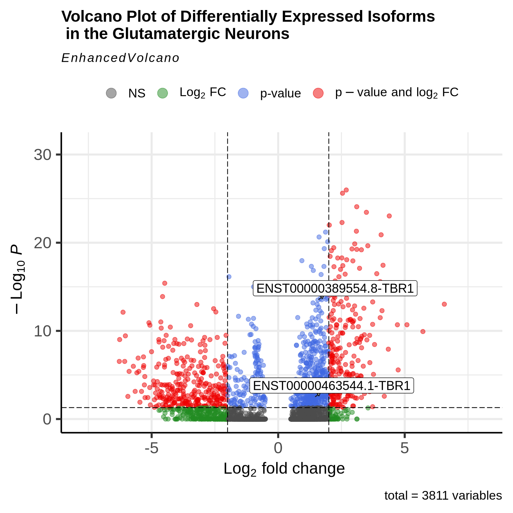

Chapter 5 Finding differentially expressed genes and isoforms
5.1 Differentially expressed genes by cluster identity
first we will look at marker genes for each cluster. This will help us identify which genes are DE in each cluster and indicate which cell type each cluster belongs to. We will also look at DE isoforms using the same methodology
Code
#Find markers for all clusters using the "RNA" and "iso" assay
all_markers_gene <- FindAllMarkers(seu_obj, assay = "RNA", do.print = TRUE,
logfc.threshold = 0.5, min.pct = 0.20, only.pos = TRUE) %>% dplyr::filter(p_val_adj < 0.05)
all_markers_iso <- FindAllMarkers(seu_obj, assay = "iso", do.print = TRUE,
logfc.threshold = 0.5, min.pct = 0.20, only.pos = TRUE) %>% dplyr::filter(p_val_adj < 0.05)
#save the list of DE genes
write.csv(all_markers_gene, "./output_files/DE/all_markers_one_gene.csv")
write.csv(all_markers_iso, "./output_files/DE/all_markers_one_iso.csv")#notes - could add other DE options maybe add this later
5.2 Identifying cell types
Based on these differentially expressed (DE) genes, we can identify the cell types present in our sample. This process is often complex and requires prior knowledge of cell markers as well as an understanding of the cell types expected in the sample. An alternative approach is to use automated cell type identification tools. In this tutorial, we will use scType [ref]. However, it is important to note that the accuracy of automated tools varies and depends heavily on the reference database they utilize. Therefore, it is recommended to use a combination of methods to cross-validate cell type identification and ensure robust results.
Code
# load libraries from sctype
lapply(c("ggraph","igraph","tidyverse", "data.tree"), library, character.only = T)## [[1]]
## [1] "EnhancedVolcano" "ggrepel" "HGNChelper" "data.tree" "igraph"
## [6] "ggraph" "parallel" "SeuratWrappers" "monocle3" "ROCR"
## [11] "KernSmooth" "fields" "viridisLite" "spam" "lubridate"
## [16] "forcats" "dplyr" "purrr" "readr" "tidyr"
## [21] "tibble" "ggplot2" "tidyverse" "patchwork" "grid"
## [26] "cowplot" "stringr" "DoubletFinder" "celda" "Matrix"
## [31] "BiocParallel" "data.table" "gridExtra" "DropletUtils" "SingleCellExperiment"
## [36] "SummarizedExperiment" "Biobase" "MatrixGenerics" "matrixStats" "Seurat"
## [41] "SeuratObject" "sp" "rtracklayer" "GenomicRanges" "GenomeInfoDb"
## [46] "IRanges" "S4Vectors" "BiocGenerics" "stats4" "stats"
## [51] "graphics" "grDevices" "utils" "datasets" "methods"
## [56] "base"
##
## [[2]]
## [1] "EnhancedVolcano" "ggrepel" "HGNChelper" "data.tree" "igraph"
## [6] "ggraph" "parallel" "SeuratWrappers" "monocle3" "ROCR"
## [11] "KernSmooth" "fields" "viridisLite" "spam" "lubridate"
## [16] "forcats" "dplyr" "purrr" "readr" "tidyr"
## [21] "tibble" "ggplot2" "tidyverse" "patchwork" "grid"
## [26] "cowplot" "stringr" "DoubletFinder" "celda" "Matrix"
## [31] "BiocParallel" "data.table" "gridExtra" "DropletUtils" "SingleCellExperiment"
## [36] "SummarizedExperiment" "Biobase" "MatrixGenerics" "matrixStats" "Seurat"
## [41] "SeuratObject" "sp" "rtracklayer" "GenomicRanges" "GenomeInfoDb"
## [46] "IRanges" "S4Vectors" "BiocGenerics" "stats4" "stats"
## [51] "graphics" "grDevices" "utils" "datasets" "methods"
## [56] "base"
##
## [[3]]
## [1] "EnhancedVolcano" "ggrepel" "HGNChelper" "data.tree" "igraph"
## [6] "ggraph" "parallel" "SeuratWrappers" "monocle3" "ROCR"
## [11] "KernSmooth" "fields" "viridisLite" "spam" "lubridate"
## [16] "forcats" "dplyr" "purrr" "readr" "tidyr"
## [21] "tibble" "ggplot2" "tidyverse" "patchwork" "grid"
## [26] "cowplot" "stringr" "DoubletFinder" "celda" "Matrix"
## [31] "BiocParallel" "data.table" "gridExtra" "DropletUtils" "SingleCellExperiment"
## [36] "SummarizedExperiment" "Biobase" "MatrixGenerics" "matrixStats" "Seurat"
## [41] "SeuratObject" "sp" "rtracklayer" "GenomicRanges" "GenomeInfoDb"
## [46] "IRanges" "S4Vectors" "BiocGenerics" "stats4" "stats"
## [51] "graphics" "grDevices" "utils" "datasets" "methods"
## [56] "base"
##
## [[4]]
## [1] "EnhancedVolcano" "ggrepel" "HGNChelper" "data.tree" "igraph"
## [6] "ggraph" "parallel" "SeuratWrappers" "monocle3" "ROCR"
## [11] "KernSmooth" "fields" "viridisLite" "spam" "lubridate"
## [16] "forcats" "dplyr" "purrr" "readr" "tidyr"
## [21] "tibble" "ggplot2" "tidyverse" "patchwork" "grid"
## [26] "cowplot" "stringr" "DoubletFinder" "celda" "Matrix"
## [31] "BiocParallel" "data.table" "gridExtra" "DropletUtils" "SingleCellExperiment"
## [36] "SummarizedExperiment" "Biobase" "MatrixGenerics" "matrixStats" "Seurat"
## [41] "SeuratObject" "sp" "rtracklayer" "GenomicRanges" "GenomeInfoDb"
## [46] "IRanges" "S4Vectors" "BiocGenerics" "stats4" "stats"
## [51] "graphics" "grDevices" "utils" "datasets" "methods"
## [56] "base"Code
lapply(c("dplyr","Seurat","HGNChelper"), library, character.only = T)## [[1]]
## [1] "EnhancedVolcano" "ggrepel" "HGNChelper" "data.tree" "igraph"
## [6] "ggraph" "parallel" "SeuratWrappers" "monocle3" "ROCR"
## [11] "KernSmooth" "fields" "viridisLite" "spam" "lubridate"
## [16] "forcats" "dplyr" "purrr" "readr" "tidyr"
## [21] "tibble" "ggplot2" "tidyverse" "patchwork" "grid"
## [26] "cowplot" "stringr" "DoubletFinder" "celda" "Matrix"
## [31] "BiocParallel" "data.table" "gridExtra" "DropletUtils" "SingleCellExperiment"
## [36] "SummarizedExperiment" "Biobase" "MatrixGenerics" "matrixStats" "Seurat"
## [41] "SeuratObject" "sp" "rtracklayer" "GenomicRanges" "GenomeInfoDb"
## [46] "IRanges" "S4Vectors" "BiocGenerics" "stats4" "stats"
## [51] "graphics" "grDevices" "utils" "datasets" "methods"
## [56] "base"
##
## [[2]]
## [1] "EnhancedVolcano" "ggrepel" "HGNChelper" "data.tree" "igraph"
## [6] "ggraph" "parallel" "SeuratWrappers" "monocle3" "ROCR"
## [11] "KernSmooth" "fields" "viridisLite" "spam" "lubridate"
## [16] "forcats" "dplyr" "purrr" "readr" "tidyr"
## [21] "tibble" "ggplot2" "tidyverse" "patchwork" "grid"
## [26] "cowplot" "stringr" "DoubletFinder" "celda" "Matrix"
## [31] "BiocParallel" "data.table" "gridExtra" "DropletUtils" "SingleCellExperiment"
## [36] "SummarizedExperiment" "Biobase" "MatrixGenerics" "matrixStats" "Seurat"
## [41] "SeuratObject" "sp" "rtracklayer" "GenomicRanges" "GenomeInfoDb"
## [46] "IRanges" "S4Vectors" "BiocGenerics" "stats4" "stats"
## [51] "graphics" "grDevices" "utils" "datasets" "methods"
## [56] "base"
##
## [[3]]
## [1] "EnhancedVolcano" "ggrepel" "HGNChelper" "data.tree" "igraph"
## [6] "ggraph" "parallel" "SeuratWrappers" "monocle3" "ROCR"
## [11] "KernSmooth" "fields" "viridisLite" "spam" "lubridate"
## [16] "forcats" "dplyr" "purrr" "readr" "tidyr"
## [21] "tibble" "ggplot2" "tidyverse" "patchwork" "grid"
## [26] "cowplot" "stringr" "DoubletFinder" "celda" "Matrix"
## [31] "BiocParallel" "data.table" "gridExtra" "DropletUtils" "SingleCellExperiment"
## [36] "SummarizedExperiment" "Biobase" "MatrixGenerics" "matrixStats" "Seurat"
## [41] "SeuratObject" "sp" "rtracklayer" "GenomicRanges" "GenomeInfoDb"
## [46] "IRanges" "S4Vectors" "BiocGenerics" "stats4" "stats"
## [51] "graphics" "grDevices" "utils" "datasets" "methods"
## [56] "base"Code
# load gene set preparation function
source("https://raw.githubusercontent.com/IanevskiAleksandr/sc-type/master/R/gene_sets_prepare.R")
# load cell type annotation function
source("https://raw.githubusercontent.com/IanevskiAleksandr/sc-type/master/R/sctype_score_.R")
####
# define functions
perform_sctype_analysis <- function(seurat_obj, db_, tissue, gs_removal_list = c(),
metadat_col_prefix = "db_prefix", figure_prefix ="fig_name" ,
cluster_res = "RNA_snn_res.0.9", output_file = "") {
# Prepare gene sets
gs_list <- gene_sets_prepare(db_, tissue)
# Remove specified gene sets
for (gs in gs_removal_list) {
gs_list[["gs_positive"]][[gs]] <- NULL
}
# Calculate sctype scores
es.max <- sctype_score(scRNAseqData = seurat_obj@assays$RNA$scale.data, scaled = TRUE,
gs = gs_list$gs_positive, gs2 = gs_list$gs_negative)
# Set identities in Seurat object
Idents(seurat_obj) <- cluster_res
# Merge by cluster
cL_results <- do.call("rbind", lapply(unique(seurat_obj@meta.data[[cluster_res]]), function(cl) {
es.max.cl <- sort(rowSums(es.max[, rownames(seurat_obj@meta.data[seurat_obj@meta.data[[cluster_res]] == cl, ])]), decreasing = TRUE)
head(data.frame(cluster = cl, type = names(es.max.cl), scores = es.max.cl, ncells = sum(seurat_obj@meta.data[[cluster_res]] == cl)), 10)
}))
sctype_scores <- cL_results %>% group_by(cluster) %>% top_n(n = 1, wt = scores)
# Set low-confident clusters to "Unknown"
sctype_scores$scores <- as.numeric(sctype_scores$scores)
sctype_scores$type[sctype_scores$scores < sctype_scores$ncells / 4] <- "Unknown"
print(sctype_scores[, 1:3])
# Overlay the labels
seurat_obj@meta.data[[metadat_col_prefix]] <- ""
for (j in unique(sctype_scores$cluster)) {
cl_type <- sctype_scores[sctype_scores$cluster == j,]
seurat_obj@meta.data[[metadat_col_prefix]][seurat_obj@meta.data[[cluster_res]] == j] <- as.character(cl_type$type[1])
}
# Plotting
pclass <- DimPlot(seurat_obj, reduction = "umap", label = TRUE, repel = TRUE, group.by = metadat_col_prefix)
print(pclass)
# Save the plot to a PDF
pdf(file = paste0(figure_prefix, "_", metadat_col_prefix, "_sctype_genes.pdf"), width = 8, height = 8)
print(pclass + ggtitle(figure_prefix))
dev.off()
# Save the updated Seurat object to an RDS file
if (output_file != "") {
saveRDS(seurat_obj, file = paste0(output_file, ".rds"))
}
# Return the updated Seurat object
return(seurat_obj)
}
# Define variables
db_ = "https://raw.githubusercontent.com/IanevskiAleksandr/sc-type/master/ScTypeDB_full.xlsx"; # this is a defualt databse from sctype
tissue <- "Brain"
gs_removal_list <- c("Tanycytes") # list of cell types from the db to remove
seu_obj <- perform_sctype_analysis(seu_obj, db_, tissue, gs_removal_list,
metadat_col_prefix ="sctype_db", figure_prefix = "Day_55",
output_file = "Day_55", cluster_res = "RNA_snn_res.0.9")## # A tibble: 8 × 3
## # Groups: cluster [8]
## cluster type scores
## <fct> <chr> <dbl>
## 1 2 Immature neurons 81.3
## 2 7 Myelinating Schwann cells 7.18
## 3 0 Mature neurons 108.
## 4 6 Mature neurons 37.4
## 5 3 Radial glial cells 85.1
## 6 4 GABAergic neurons 82.8
## 7 5 Radial glial cells 92.0
## 8 1 Radial glial cells 94.0
Sctype gives us some indication of which cell types we have in our data. We can use the DE genes to get some more specific info. Glutatergic Neuronal Markers “SLC17A7â€,“SLC17A6â€,“GRIN1â€,“GRIN2B†are all DE in cluster 0 - the mature neuron cluster. This suggests these cells are indeed glutamatergic neurons.
Code
# markers for
FeaturePlot(seu_obj, features = c("SLC17A7","SLC17A6","GRIN1","GRIN2B"))
Code
## Change the names of ScType DF to Glutatertergic neurons in metadat
seu_obj@meta.data$sctype_db <- gsub("Mature neurons", "Glutamatergic neurons", seu_obj@meta.data$sctype_db)We can now plot the UMAP to ensure we have update the metadata correctly
Code
DimPlot(seu_obj, group.by = "sctype_db") | DimPlot(seu_obj, reduction ="umap_iso", group.by = "sctype_db")
It is possible to explore the radial glial cells in more detail as there are likely more subtypes of radial glial cells in this data set. For the purposes of the tutorial we will leave this annoation as is. Based on this we have 5 main cell types.
Radial glial cells
Immature neurons
Glutamatergic neurons
GABAergic neuorns
5.3 DE genes and isofroms based on annotaed cell types.
Cell type identification is an iterative process and often one of the most challenging aspects of single-cell analysis. For this example, we will assume that our combined approach, using automated clustering and differential expression (DE) analysis based on clusters, provides a good indication of the cell types present in our data.
With this foundation, we can refine our DE analysis by focusing on cell types rather than clusters. This step is critical in nearly all transcriptomic analyses, offering a wide range of possibilities for downstream investigations.
A common downstream approach involves generating volcano plots to visualize DE genes and isoforms. performing gene set enrichment analysis, In the following sections, we will demonstrate how to perform these types of analyses and explore their potential applications.
The code chunk below provides an example of how to execute these analyses:
Code
#Set identities based on cell type
Idents(seu_obj) <- "sctype_db"
all_markers_gene_celltype <- FindAllMarkers(
object = seu_obj,
assay = "RNA",
group.by = "sctype_db", # Replace with your metadata column name
logfc.threshold = 0.5,
min.pct = 0.20,
only.pos = FALSE # changed this to false to get negatively DE genes to
)
all_markers_iso_celltype <- FindAllMarkers(
object = seu_obj,
assay = "iso",
group.by = "sctype_db", # Replace with your metadata column name
logfc.threshold = 0.5,
min.pct = 0.20,
only.pos = FALSE # changed this to false to get negatively DE genes to
)
#save the list of DE genes
write.csv(all_markers_gene_celltype, "./output_files/DE/all_markers_one_gene_celltype.csv")
write.csv(all_markers_iso_celltype, "./output_files/DE/all_markers_one_iso_celltype.csv")5.3.1 Volcano plots
5.3.1.1 FIndAllMarkers DE
Fist lets generate some volcano plots. This analysis can be useful to identify genes and isoforms that are DE and also have large fold changes. Often these types of features are the interesting for further analysis. This can be done for any of the cell types defined in our object. For the sake of brevity we will look a the Glutamatergic neurons.
When plotting the volcano plots, we observe that many genes exhibit both statistically significant p-values (p < 0.05) and log2 fold changes -2< or >2. To highlight key findings, we have labeled some glutamatergic marker genes, demonstrating that the genes we expect to be upregulated in this cell type are indeed showing the expected pattern. Additionally, we have labeled VIM, a marker of radial glial and projenitor cells. As anticipated, VIM expression is downregulated in these neurons, which aligns with our expectations.
Code
library(EnhancedVolcano)
#filter for the cell type of interest
glut_DE_iso <- dplyr::filter(all_markers_iso_celltype, cluster == "Glutamatergic neurons")
glut_DE_gene <- dplyr::filter(all_markers_gene_celltype, cluster == "Glutamatergic neurons")
#we can plot our colcano plot
EnhancedVolcano(glut_DE_gene,
lab=glut_DE_gene$gene,
x='avg_log2FC', y='p_val_adj', pCutoff=0.05, FCcutoff=2,
boxedLabels = TRUE,
drawConnectors = TRUE,
selectLab= c("SLC17A7","SLC17A6",'GRIN1',"GRIN2B",'VIM'),
title = "Volcano Plot of Differentially Expressed Genes \n in the Glutamatergic Neurons")
Interestingly our long read data allows us to perform the same analysis but at the isoform level. This can be hard to interpret as there are many more features to plot on the volcano plot. for the sake a clarity we have just labelled TBR1 isoforms. This code bellow will allow suers to plot all the isofroms from agiven gene on the volacon plot making interpation of the data a bit cleaner. Here just like in @ref(Add isoform counts to Seurat object) we can see two differnt isofroms of the TBR1 gene showing regulation this cell type
Code
gene <- "TBR1"
plot_features_list <- grep(paste0("(^|-|\\b)", gene, "($|\\b)"), features, value = TRUE)
EnhancedVolcano(glut_DE_iso,
lab=glut_DE_iso$gene,
x='avg_log2FC', y='p_val_adj', pCutoff=0.05, FCcutoff=2,
boxedLabels = TRUE,
drawConnectors = TRUE,
selectLab= plot_features_list,
title = "Volcano Plot of Differentially Expressed Isoforms \n in the Glutamatergic Neurons")
5.3.1.2 FIndMarkers DE
Finding All Markers is just one type of differential expression (DE) analysis that can be performed. Seurat offers the FindAllMarkers function, which tests the cell type of interest against all other cell types. While this approach is often sufficient for identifying marker genes, users may also want to test differences between two specific cell types. For instance, you might want to identify DE genes when comparing glutamatergic neurons to radial glial cells. Below, we demonstrate how to perform this type of analysis with the FindMarkers function.
Code
DefaultAssay(seu_obj) <- 'RNA' # difeine the gne assay as default
glu_RG_gene <- FindMarkers(seu_obj,
ident.1 = "Glutamatergic neurons",
ident.2 = "Radial glial cells",
logfc.threshold = 0.5, min.pct = 0.02)
DefaultAssay(seu_obj) <- 'iso' # difeine the gne assay as default
glu_RG_iso <- FindMarkers(seu_obj, ident.1 = "Glutamatergic neurons",
ident.2 = "Radial glial cells",
logfc.threshold = 0.5, min.pct = 0.02)
#Volcano plots
EnhancedVolcano(glu_RG_gene, lab=rownames(glu_RG_gene),
x='avg_log2FC', y='p_val_adj',
#selectLab= "VIM",
pCutoff=0.05, FCcutoff=2,
title = "Volcano Plot of Differentially Expressed Gene \n Glutamatergic Neurons vs Radial glial Cells")Code
#Volcano plots
EnhancedVolcano(glu_RG_iso, lab=rownames(glu_RG_iso),
x='avg_log2FC', y='p_val_adj',
#selectLab= "VIM",
pCutoff=0.05, FCcutoff=2,
title = "Volcano Plot of Differentially Expressed Isoforms \n Glutamatergic Neurons vs Radial glial Cells")